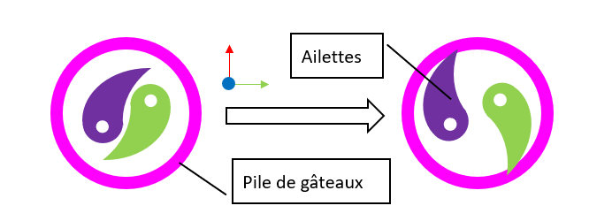
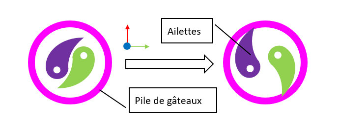

3.2.1. Introduction¶
3.2.1.1. Objectifs¶
Le robot n°1 sera le principal, il aura pour but de :
Faire les gateaux.
Mettre les cerises précharcher sur les gateaux.
Mettre les roues dans le plat, à la fin du service.
Se déguiser pour faire la fête.
Calculer l’addition.
3.2.1.2. Architecture¶
Choix d’une base holonome à 4 roues de 58mm. 4 roues pour concerver le code de l’année precedante, le developpement revelera malheureusement qu’il est necessaire de revoir le code. Les differents prehenseur montés sur les elevateur seront monter dans les espaces vide entre chaque branche de la base holonome
3.2.2. Strategie CdFR¶
strategie utiliser et deplacement sequntiel choisis pour les matchs a la cdfr
3.2.3. Deplacement¶
3.2.3.1. Roue¶
{kind=link}
roue holonome pour la base holonome, achat sur aliexpress 2 ranger de 5 rouleaux, 58mm de rayon
3.2.4. Actionneurs¶
3.2.4.1. Elevateur¶
Un des objectifs de cet année etait de tester un mecanisme du robot. le but est de reutiliser cette partie du robot tous les ans sans avoir a le refaire : L’elevateur. chaque année le sujet de la coupe implique d’avoir a lever un objet pour le deplacer, le role de l’elevateur sera de faire ce mouvement vertical et seul un prehenseur qui se monte dessus devra etre reingenierer chaque année. Cet année 3 elevateur ont ete monter sur le premier robot pour soulever les piles de gateaux
{kind=link}
Apres une année avec ce systeme ce dernier necessite quelque modifications mais le principe est concluant et sera reutiliser sur les futurs robot
3.2.4.2. Prehenseur des piles¶
Pour attraper les piles genoise, creme et de glacage nous avons develloper une prehenseur qui se monte sur les elevateurs
Le but de ce prehenseur est d’inserer deux ailette dans les trou au centre des piles et d’acrter ces deux ailette pour exercer une pression un pression sur les parois du trou. l’elevateur permettra d’attraper les piles a differente hauteur pour attraper 1, 2 ou 3 elements pour ainsi reconstituer les gateaux avec la bonne recette
 

{kind=link}
Par manque de temps nous avons pas pu utiliser les actionneur a leur plein potentiel. Nous les avons reduis a une simple tige metalique qui plonge au centre des piles et qui traine les piles en meme temps que le robots ce deplace
3.2.4.3. Depose des cerises¶
Pour marquer plus de points il est possible de poser une cerise par gateaux. Un actionneur supplementaire a donc ete ajouter sur le cote restant du robot


3.2.5. Cartes¶
3.2.5.1. Raspberry pi 4¶
Fait tourner ros2 pour faire fonctionner le robot, communique avec les autres cartes
3.2.5.2. Arduino Mega et ramps1.6¶
Une arduino mega equipper d’un shield ramps 1.6 est utiliser uniquement pour le controle des moteurs, cette dernier recoit ces ordres par liaison serie de la pi4
3.2.5.3. Arduino Uno¶
Une arduino uno est utiliser pour controler les servo moteur et pour lire les valeur des differents capteur et sonde dans son cas elle recevais les ordre des servomoteur de la pi4 et envoyais les donner de l’imu, de tension et de courant a cette derniere